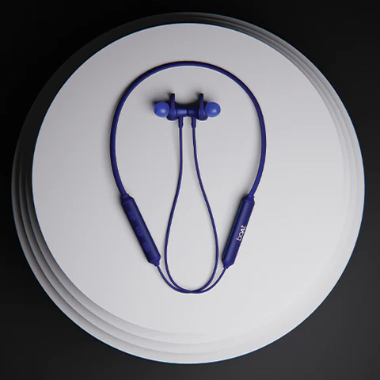
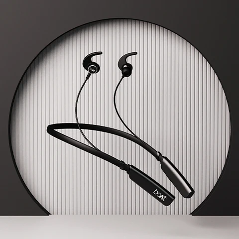

Top Headphones Under 2000 to Buy in June 2022
What makes the world a better place? It is music. When comes to choosing the right wireless headphones can be a task. Here is a list for you to go through to find headphones under 2000 before making your choice. Your playlist makes your own little wonderland of your choosing where you can fly away to feel better, to come closer to your own being, or just to chill. Music makes your soul soar. And good music needs great sound.With a plethora of options to choose from — some of them really expensive — choosing the right headphones becomes a task. Don’t worry, we are here to get you a list of bluetooth headphones that won’t hurt your pocket. We bet that you will not be able to stop the shop monster in you after going through this list.
Best Headphones Under 1000
The King of Bluetooth Earphones — Rockerz 245v2
Rockerz 245v2 ticks every checkpoint to earn its spot in the list of best headphones under 1000. These bluetooth earphones are high on style quotient, have massive 12mm dynamic drivers, long battery life, and offer a premium HD sound like no other. For fitness freaks who don’t want to miss a day of play outside their house and who would not stop vibing to tunes on their neckband in a little shower from the heavens, these best headphones under 1000 are IPX5 sweat and water resistant. These headphones with mic are light, quite literally and on your pockets.
The Best Headphones Under 1000 to fuel your Hustle — Rockerz 235v2
When the hustle is strong, you need the best headphones under 1000 that can keep up with your pace. Drumrolls presenting Rockerz 235v2. These bluetooth earphones with mic are just the right choice for your fast life, which give you 4 hours of playback with just 20 minutes of charging. The 10mm dynamic drivers on this neckband that pumps out an immersive experience makes these bluetooth earphones a must have for audiophiles. You can also summon Siri or Google Assistant with your voice with the one press voice assistant.